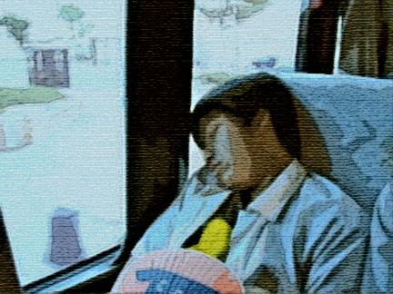

Grow up here and you learn that God is insatiable:
God will consume you. You learn this best from the sky.
Two hours’ drive from the Cities, the clutter of suburb
drops away like pretense, and then: that sky,
unbroken from one horizon to the other
over the corn and soybeans, the soybeans and corn.
The bowl of sky, scooped out, from the June sunrise
in a ribbon of molten gold at one edge of the world
to the place where night presses blue into black.
Those ends of the earth. You learn from seeing them
in the school ballfield, setting up chairs with your father.
Everything open, taking whatever comes,
the doors of the church, the gaps in the ragged procession.
Even the dead teach you, their monuments
in the churchyard — saints, Virgins — patient, unmoved,
while children walk in a line before the priest
sweltering in his vestments, lifting the monstrance.
The altar boys sweating, suffering all for God.
The church supper for His glory. The cloudless sky.
Transaction

Hold your breath: it’s a lot of money,
the bill from your daughter’s gold-plated college.
Slouch, squint at the screen and pay it:
Break it open, the penny jar
you tithed to the future. Grub in the hoard
of other people’s caution and discipline.
Run off hauling the bags of their hope,
trailing the long scraps of ambition.
Spend your father’s Depression stories.
Spend the years he spent in envying
all of the guys who got through school
on the GI Bill, because he didn’t.
Spend your mother’s first husband:
she doesn’t say, but you think he hit her.
Spend the way her arms, her shoulders
rise with the pitch of an angry voice.
A century spent with a closed fist
opened out to a single click:
Now move your finger the breadth of an eyelash.
Later, riding the bus to work.
expect to be silent. Who’d understand?
The Somali woman who rides every morning?
You couldn’t say, A hundred years,
that’s all it takes to make it here!
You wouldn’t say, A year of your earnings,
spent in a second! So what could you say?
Nothing. Less awkward for both of you, then,
that she, having just come from her night shift,
is folded warmly, there on the seat,
in sleep, not yet even dreaming in English.
Maryann Corbett’s poetry has appeared or is forthcoming in Atlanta
Review, Measure, The Evansville Review, The Dark Horse, and other
journals in print and online. Her chapbook Gardening in a Time of War was published in 2007 by Pudding House. She works as a legal-writing adviser, editor, and indexer for the Minnesota Legislature.